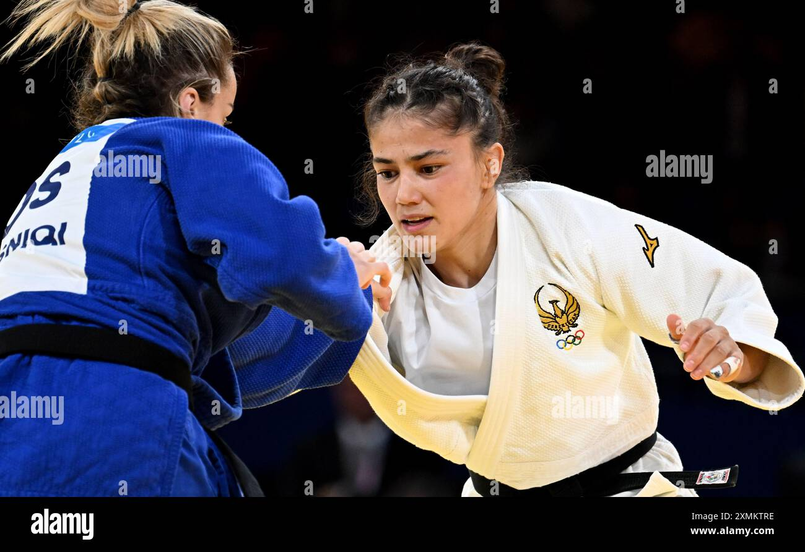

Diyora Keldiyorova —özbəkistanlı Judoçudur. O, 1998-ci ildə anadan olub və 2024-cü ildə Paris Yay Olimpiya Oyunlarında qadınlar arasında 52 kq çəki dərəcəsində qızıl medal qazanaraq tarixində ilk özbəkistanlı qadın Olimpiya çempionu olub. O, həmçinin Asiya çempionu, dünya çempionatının mükafatçısı və "Böyük Dəbilqə" turnirini qazanan ilk özbəkistanlı oyunçu kimi tanınır.
ESAS MELUMATLAR
Tarix 13 iyul 1988-ci il
Doğum yeri: Özbəkistan, Səmərqənd rayonu, Cuma şəhəri.
Idman novu Judo
Çəki ölçüsü: 52 kq
Esas Nailiyyetleri

2024-cü ildə Paris Yay Olimpiya Oyunlarında qızıl medal qazanıb.
Özbəkistan tarixində Olimpiya Oyunlarında qadın dzyudoçular arasında ilk qızıl medalı qazanan qurğu olub.
Asiya çempionatının qalibi olub.
Dünya çempionatlarının mükafatçısıdır.
"Böyük Dəbilqə" turnirini qazanan ilk özbəkistanlı qadın dzyudoçudur.
KARYERASININ BASLANGICI:
Diyora Keldiyorova 6 yaşında olarkən Xurşidə Xoliqovanın adı altında judo ilə məşğul olmağa icazə verilir.
O, Pastdargom Politexnika Peşə Kollecində və sonradan Səmərqənd Dövlət Universitetində təhsil əldə edilib.